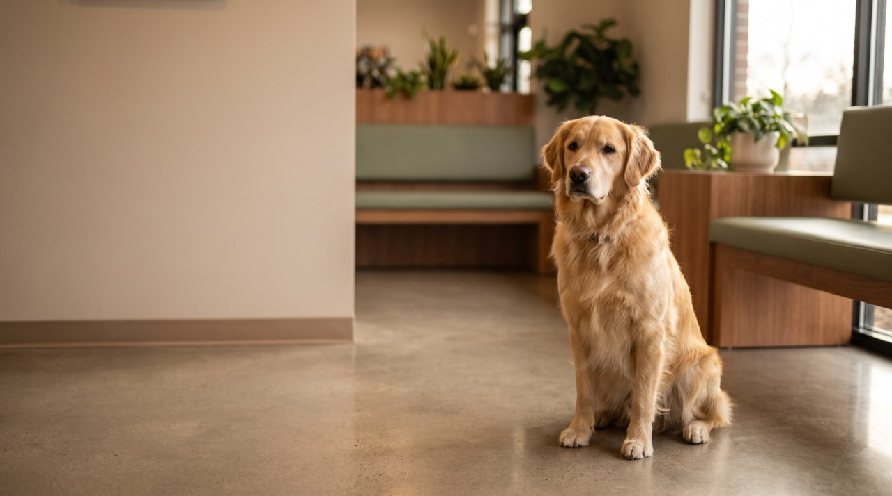

01
Wellness & vaccination
Annual exams, vaccines and parasite prevention on a schedule we track for you, so you get a reminder rather than a guilty realisation.
Full-service small animal care. Refills, records, reminders and booking all happen online, so the front desk is free for the people standing in front of it with a frightened animal.

Services
Routine to surgical, with the same team seeing your animal each time wherever we can manage it.
Annual exams, vaccines and parasite prevention on a schedule we track for you, so you get a reminder rather than a guilty realisation.
First visit free. Everything the first year needs bundled at a set price, including spay or neuter and microchipping.
Under anaesthetic with full monitoring and dental radiographs. Most dental disease is invisible above the gumline.
In-house lab, digital radiography and ultrasound, so most answers come the same visit rather than next week.
Results
Process
Especially for a first pet, where nobody tells you what actually happens.
Pick a real slot on a real calendar, any hour. You get a confirmation, not a promise to call you back.
Bring any records you have. First visits run long on purpose — we'd rather answer everything now.
You get a written care plan with costs before anything is done, and we'll tell you what can wait.
Reminders when things are due, refills online, and a direct line for the questions that feel too small to phone about.
We're accepting new patients and hold same-day slots for sick visits. Book online in about a minute, or call and we'll sort it.
Emergencies after hours: call and our recording routes you to the on-call emergency hospital.